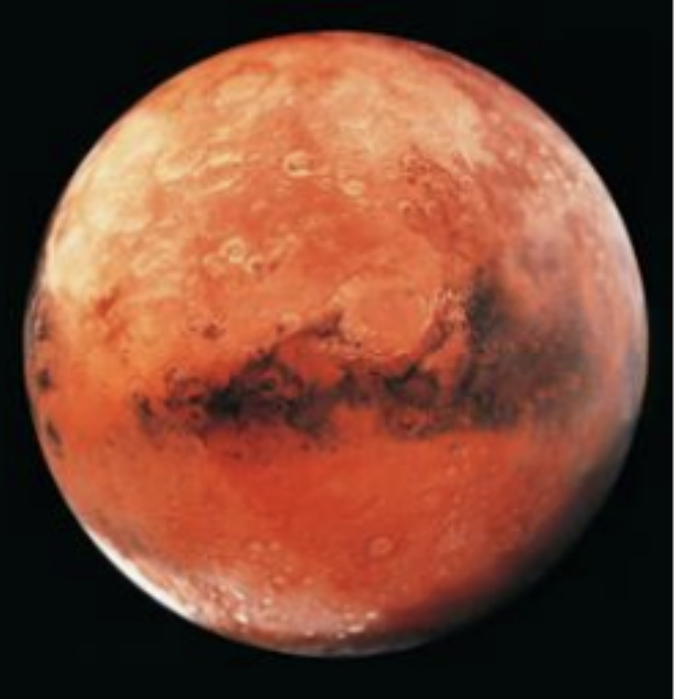
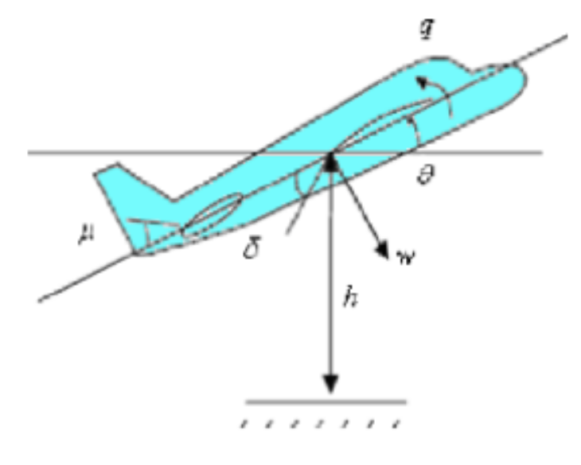

Space • Engineering
Mission to Mars - Overcoming the technological barriers to human exploration

A mission to Mars is one of the biggest goals in modern space exploration, but it comes with many technological challenges. Mars has a very different environment compared to Earth, which creates serious risks for astronauts. Some of the biggest problems include radiation exposure, sustaining life for long periods of time, and safely landing on the planet. Scientists and engineers are currently developing technologies that could help overcome these barriers and make human exploration of Mars possible.
Radiation Exposure
Mars lacks a magnetic field that would normally deflect harmful particles. Its atmosphere is also much thinner compared to Earth’s, meaning it only provides minimal protection from cosmic and solar radiation. Because of this, astronauts on a mission to Mars would be exposed to very high levels of radiation.
This radiation can cause serious health problems such as cancer, radiation sickness, and even genetic damage over time. Since the journey to Mars is very long, protecting astronauts from radiation is one of the most important challenges that needs to be solved.
Possible Solution
One way to overcome this problem is by using hydrogen-based shielding. Hydrogen has light atoms, which generate less secondary radiation when impacted by cosmic rays. This limits the production of dangerous radiation that could affect the astronauts’ bodies. Because of this, hydrogen-based materials could provide better protection for astronauts during long space missions.
Life Support and Sustainability
Another major challenge is sustaining life during the mission. A trip to Mars would last many months, and the planet itself has a very cold atmosphere and limited natural resources compared to Earth. Astronauts would need reliable supplies of oxygen, food, and water for the entire mission.
Possible Solutions
One solution is to use a closed-loop life support system. This system would recycle important resources such as water and oxygen instead of constantly needing new supplies from Earth. Recycling these materials would make the mission more sustainable and reduce the number of resources that need to be transported.
Another method is using hydroponics to grow food. Hydroponics involves growing plants in nutrient-rich water instead of soil. This is useful because Martian soil is not suitable for agriculture. Hydroponic systems are also space-efficient and allow food to be grown in a controlled and healthy environment, which would help support astronauts on long missions.
Entry, Descent and Landing

Landing safely on Mars is another difficult challenge. Mars has a very thin atmosphere, which means spacecraft cannot rely as much on aerodynamic drag to slow down during entry. Spacecraft entering the atmosphere will travel at extremely high speeds, which can create intense heat and potentially damage the heat shield or spacecraft.
This heat and speed can also affect the safety of the astronauts during landing.
Possible Solutions
To deal with the intense heat during entry, spacecraft can use strong heat shields that protect the vehicle while allowing it to slow down in a controlled way. Thrusters can also be used to help decelerate the spacecraft when it is travelling at supersonic speeds.
Another possible technology is inflatable aerodynamic decelerators, which increase drag and slow down the spacecraft more effectively. To further protect astronauts during landing, airbags could be used to cushion the spacecraft when it reaches the Martian surface.
Conclusion
Although a mission to Mars presents many technological challenges, solutions are already being developed. Radiation protection, sustainable life support systems, and safe landing technologies are all critical areas of research. By continuing to develop these technologies, scientists and engineers are getting closer to making human exploration of Mars a reality.